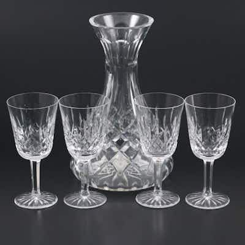

OUTPRICEDWaterford "Lismore" Crystal Wine Glasses and Carafe
Waterford "Lismore" cut crystal wine carafe with four matching wine goblets
19h left
Current bid$350 · 17 bids
Est. value$297
Your max bid$156
All-in at max$214
Projected close$624
Margin at bid−$140
Details & price history →